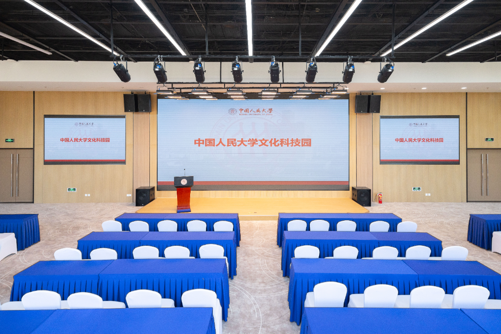
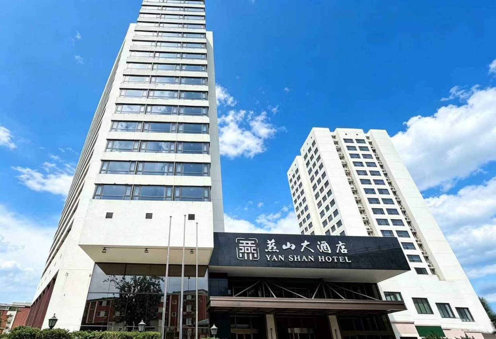
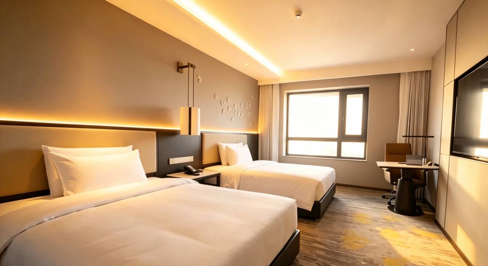

IJTCS-FAW 2026
Attending
Venue, transportation, accommodation, and visa information for participants.
Venue
IJTCS-FAW 2026 will be held at the Culture Building, Renmin University of China Cultural Science Park, in Beijing. The conference room and building access instructions are TBA.

Renmin University of China, Beijing
Photo provided by the IJTCS-FAW 2026 organizers · cropped for display- Host institution
- Renmin University of China
- City
- Beijing, China
- Conference dates
- –
- Building
- Culture Building, Renmin University of China Cultural Science Park
- Address
- No. A59 Zhongguancun Street, Haidian District, Beijing
北京市海淀区中关村大街甲59号，中国人民大学文化大厦 - Venue map
- View Culture Building on AMap
- Conference room
- TBA
Travel
The nearby metro station is Renmin University (人民大学), served by Lines 4 and 12. Suggested connections from Beijing’s airports and major railway stations are listed below. Check the operators’ current service information before travelling, especially for late arrivals, and use the venue or hotel map for the final walking route.
| Arrival point | Suggested metro route |
|---|---|
| Beijing Capital International Airport (PEK) | Capital Airport Express to Sanyuanqiao (三元桥); transfer to Line 12 toward Sijiqing Qiao (四季青桥) and alight at Renmin University. |
| Beijing Daxing International Airport (PKX) | Daxing Airport Express to Caoqiao (草桥); transfer to Line 19 toward Mudanyuan (牡丹园) to Ping’anli (平安里), then Line 4 toward Anheqiao Bei (安河桥北) to Renmin University. |
| Beijing South Railway Station (北京南站) | Line 4 toward Anheqiao Bei (安河桥北) directly to Renmin University. |
| Beijing West Railway Station (北京西站) | Line 9 toward National Library (国家图书馆); transfer there to Line 4 toward Anheqiao Bei (安河桥北) to Renmin University. |
| Beijing Fengtai Railway Station (北京丰台站) | Line 16 toward Bei’anhe (北安河) to National Library (国家图书馆); transfer to Line 4 toward Anheqiao Bei (安河桥北) to Renmin University. |
| Beijing Railway Station (北京站) | Line 2 via Chongwenmen (崇文门) to Xuanwumen (宣武门); transfer to Line 4 toward Anheqiao Bei (安河桥北) to Renmin University. |
| Beijing North Railway Station (北京北站) | Follow signs to Xizhimen (西直门) metro station; take Line 4 toward Anheqiao Bei (安河桥北) to Renmin University. |
| Qinghe Railway Station (清河站) | Line 13 toward Xizhimen (西直门); transfer there to Line 4 toward Anheqiao Bei (安河桥北) to Renmin University. |
These are suggested rail connections, not guaranteed fastest routes. Journey times depend on waiting, transfers, and the final walking route. Participants may also take a licensed taxi to the Chinese venue or hotel address shown on this page.
Recommended Accommodation
YAN SHAN HOTEL (燕山大酒店)
The organizers recommend Beijing Yanshan Hotel near the conference venue. Attendees should make their own reservations by contacting Manager WANG Yang (王洋) directly by telephone or email.
- Hotel address
- No. A38 Zhongguancun Street, Haidian District, Beijing, China
北京市海淀区中关村大街甲38号 - Hotel map
- View Yanshan Hotel on AMap
- Booking contact
- Manager WANG Yang (王洋)
- Telephone
- +86 13716884920
- 921912520@qq.com
| Room package | Rate (CNY) |
|---|---|
| No breakfast | 500 |
| One breakfast included | 550 |
| Two breakfasts included | 600 |
These conference rates were supplied by the organizers. Please confirm your room type, stay dates, availability, breakfast package, and payment and cancellation terms directly with the hotel when booking. Use the hotel and venue map links to plan the walking route; the hotel entrance for your reservation should be confirmed with the booking contact.

Exterior reference image.
Source: Ctrip hotel listing. Image rights remain with the respective rights holders.
Room type and layout are subject to confirmation by the hotel.
Source: Ctrip hotel listing. Image rights remain with the respective rights holders.Visa Information
Visa information and the invitation-letter procedure are TBA. Participants should verify entry requirements through official channels applicable to their nationality and travel route.
Local Information
- Campus map: TBA
- Restaurants: TBA
- Emergency contacts: TBA